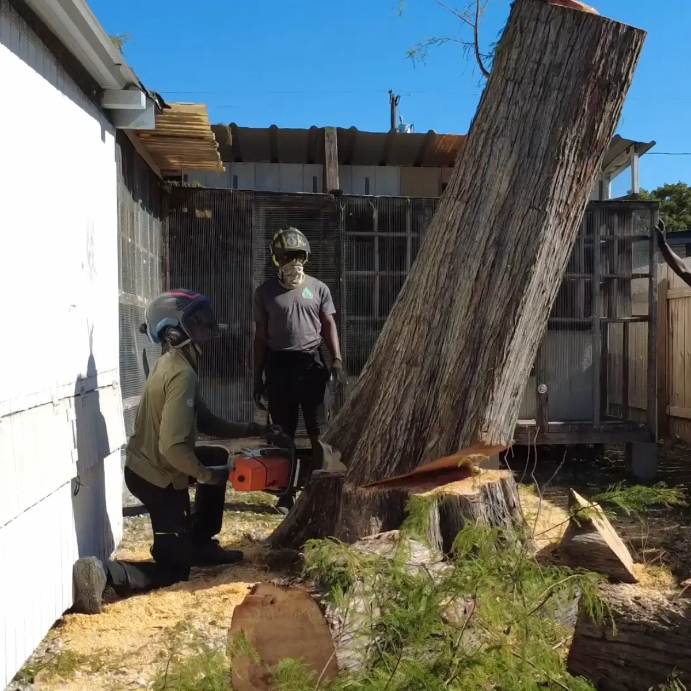

Tree Trimming Safety
Do you have trees on your property that need trimming? While tree trimming may seem like a simple task, it’s important to prioritize safety to avoid accidents and injuries. A Perfect Cut Tree Service understands the importance of safety when it comes to tree trimming and has developed a comprehensive guide to ensure a safe and successful trimming process.
Urgent or unsafe? Call (504) 732-0779


Tree trimming is a common practice to maintain the health and appearance of trees. However, it can also be a dangerous task if not approached with caution. Accidents such as falling branches or incorrect equipment usage can result in serious injuries or damage to property.
Whether you’re a homeowner taking on the task yourself or hiring professionals, their expert advice will ensure a secure and efficient tree-trimming process. Read on to discover the essential safety measures recommended by A Perfect Cut Tree Service to protect yourself, your property, and the trees themselves.

Importance of Tree Trimming Safety
Prevent Accidents and Injuries
Tree trimming involves working with sharp tools and climbing heights, making it a potentially hazardous task. By following safety protocols, such as using proper protective equipment like helmets, gloves, and safety harnesses, you can significantly reduce the risk of accidents and injuries. Taking necessary precautions will protect yourself and those around you from falling branches, ladder accidents, or power line interference.
Ensure Proper Tree Health
Trimming trees properly not only enhances their aesthetic appeal but also promotes their overall health and longevity. By removing dead or diseased branches, you prevent potential fungal infections from spreading and ensure proper sunlight and airflow to the tree’s canopy. However, without adhering to safety guidelines, you may inadvertently cause more harm than good. It is crucial to understand the correct pruning techniques and the tree’s specific requirements to carry out the trimming process effectively.
Mitigate Property Damage
Overgrown trees can pose serious threats to nearby structures, power lines, and even pedestrians during storms or strong winds. Regular tree trimming helps prevent branches from falling and causing damage to roofs, windows, or vehicles. By following safety measures, such as evaluating the tree’s condition, using appropriate tools, and executing strategic cuts, you can safeguard both property and people from potential harm.
Preserve Wildlife and Ecosystems
Trees are not only aesthetically pleasing but also essential for maintaining biodiversity and the health of ecosystems. During the tree-trimming process, it is crucial to be mindful of nests, wildlife habitats, and the potential disruption to the surrounding flora and fauna. By being cautious and identifying potential risks to wildlife, you can ensure minimal disturbance while performing necessary tree maintenance.

Preparing for Safe Tree Trimming
At A Perfect Tree, our tree experts understand the importance of safe tree trimming. Before beginning any tree-trimming project, our team takes several steps to ensure the safety of both our workers and the surrounding property.
First, our experts thoroughly assess the tree for any potential hazards or risks. This includes checking for weak or damaged branches, identifying the proximity of power lines or structures, and evaluating the stability of the tree itself.
Based on this assessment, our team develops a strategic trimming plan that takes into consideration the best methods and equipment to use.
Safety measures such as wearing protective gear, utilizing proper cutting techniques, and implementing proper tree climbing procedures are always followed to minimize any potential accidents or damage.
Our tree experts are trained and experienced in using the necessary tools and techniques to safely trim trees, providing our customers with peace of mind and a well-maintained landscape.

Our Essential Tree Trimming Safety Practices
When it comes to tree trimming, safety should always be a top priority. Whether you’re a professional arborist or a homeowner attempting to trim your own trees, following essential safety practices is crucial to avoid accidents and injuries. At A Perfect Tree, we take safety seriously, and we have developed a set of essential tree-trimming safety practices that everyone should follow.
Wear the Right Protective Gear
One of the most important safety practices when it comes to tree trimming is wearing the right protective gear. This includes a hard hat, safety glasses or goggles, ear protection, gloves, and sturdy boots with good traction. This gear will protect you from falling branches, debris, and any potential hazards that may arise while working at heights.
Inspection and Planning
Before starting any tree trimming project, it is essential to inspect the area thoroughly and plan your approach. Look out for power lines, nearby structures, or any other potential hazards. Assess the health and stability of the tree before climbing or trimming. If the tree is near power lines or too large for you to handle, it is best to seek professional help.
Use Proper Tools and Equipment
Using the right tools and equipment is crucial for both efficiency and safety during tree trimming. Ensure that your tools are in good working condition and appropriate for the job. This may include pruning shears, loppers, pole saws, and chainsaws. Make sure you are familiar with how to use each tool safely and maintain them properly to avoid accidents.
Secure Ladders and Climbing Equipment
If you need to climb a tree or use a ladder for tree trimming, it is crucial to secure them properly. Check that the ladder is sturdy, placed on level ground, and secured to prevent any slippage. When climbing a tree, use safety harnesses or tree climbing gear to ensure stability and protect yourself in case of a fall.
Follow Proper Cutting Techniques
When trimming branches, it is essential to follow proper cutting techniques to prevent injuries. Cut branches at the branch collar, using clean and sharp tools. Avoid standing directly beneath the branch being cut and be aware of any potential falling debris. It is also crucial to never trim branches that are too close to power lines.
Know Your Limits and Seek Professional Tree Help
Tree trimming can be a risky and physically demanding task. It is important to know your limits and seek professional help if a job seems too difficult or dangerous. Professional arborists have the necessary training, experience, and equipment to handle tree trimming safely, especially for large or complex projects.
What to Photograph From a Safe Distance
Photos and video show us the tree, the property around it, how we would reach it, and any visible hazards.


Tree down or a limb on a line?
Skip the photos and call. Calls are answered 24/7.
(504) 732-0779Office hours: Monday to Friday 7 AM to 5 PM, Saturday 7 AM to 3 PM, closed Sunday.


Ready to Show Us Your Tree?
Show us the tree. An arborist reviews what you send. Photos give us a first look. Some trees need an in-person visit before we can make a final recommendation.